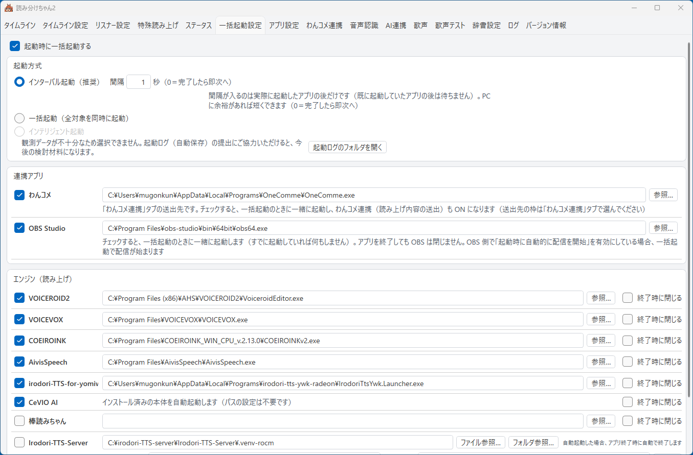
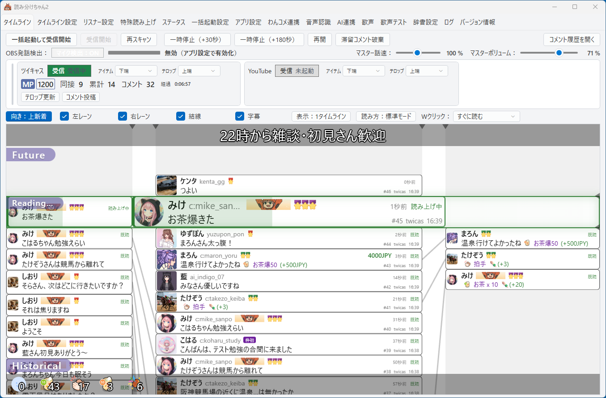
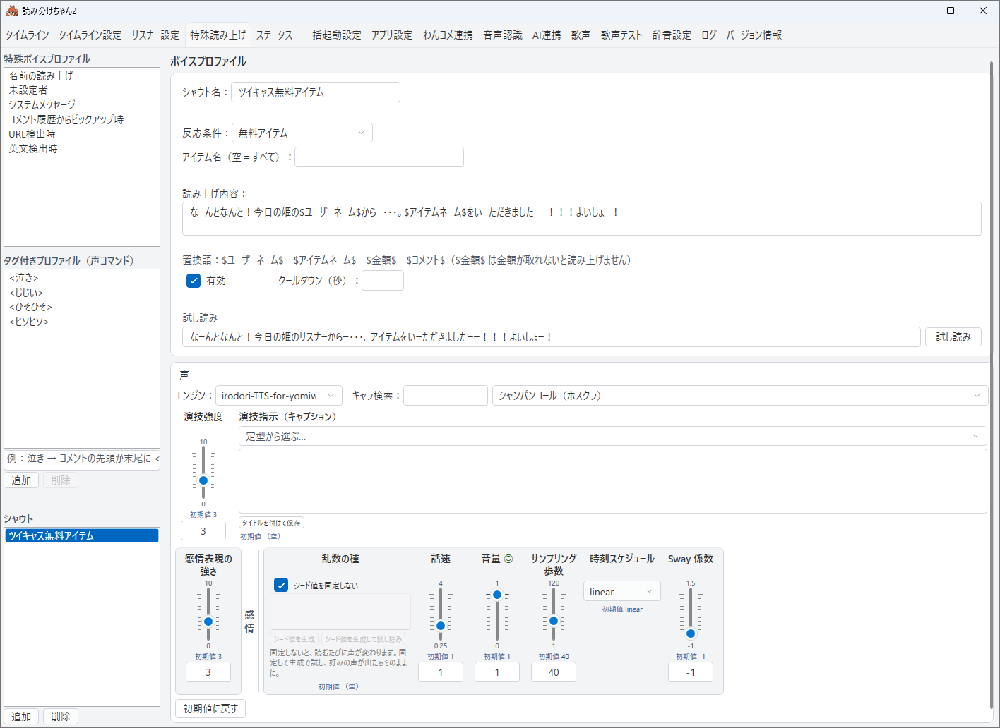
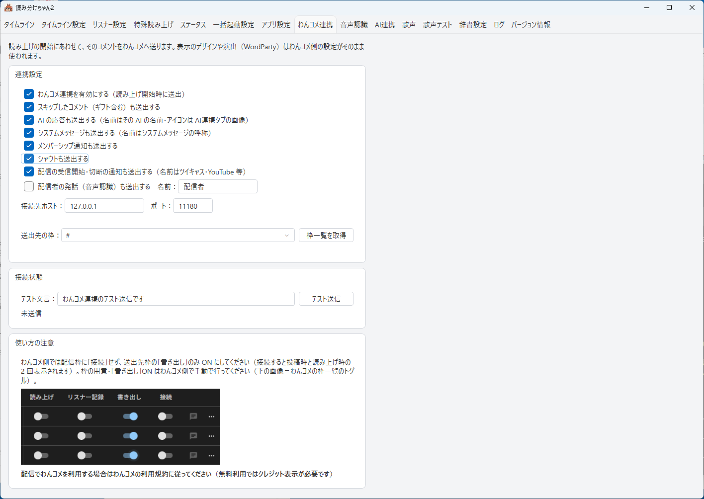
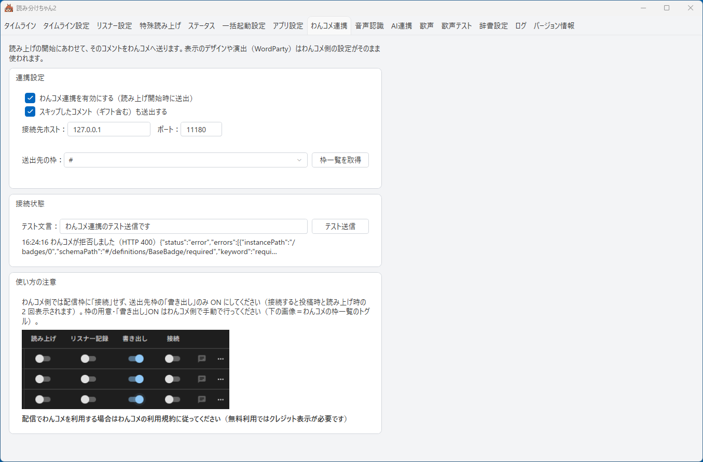
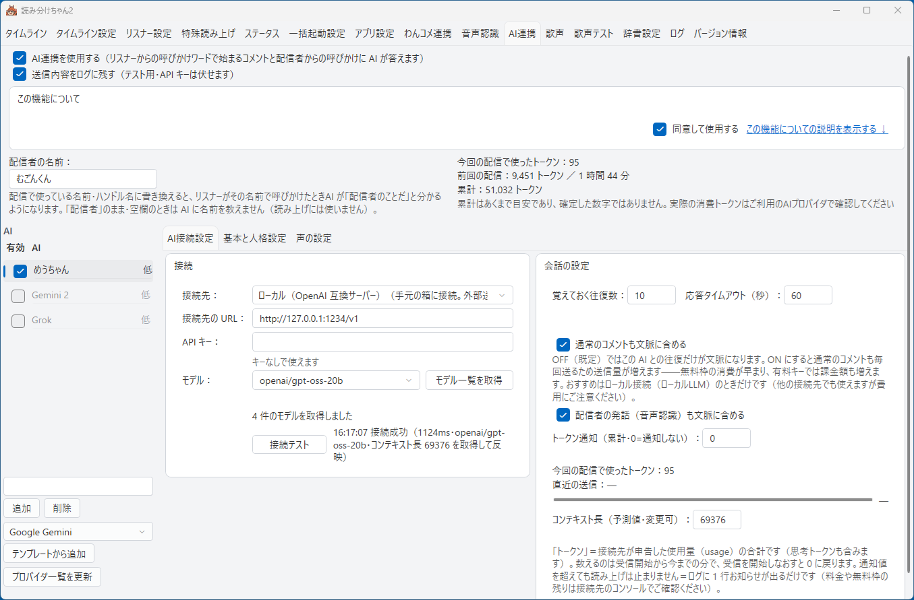
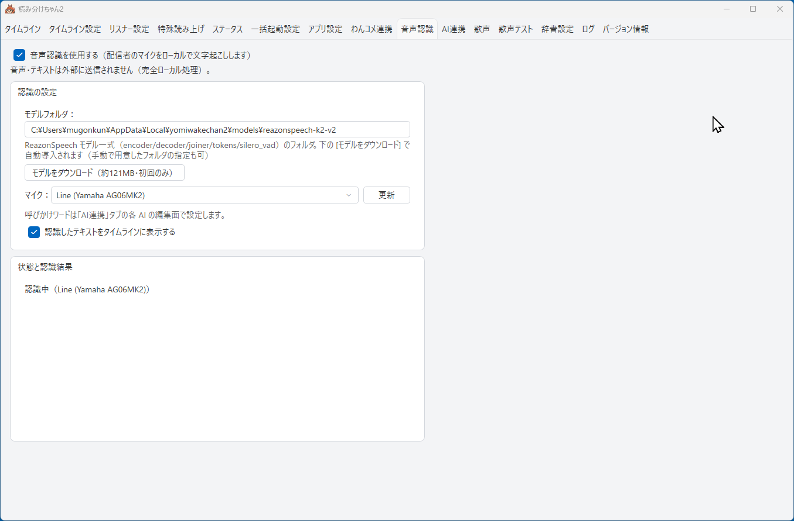
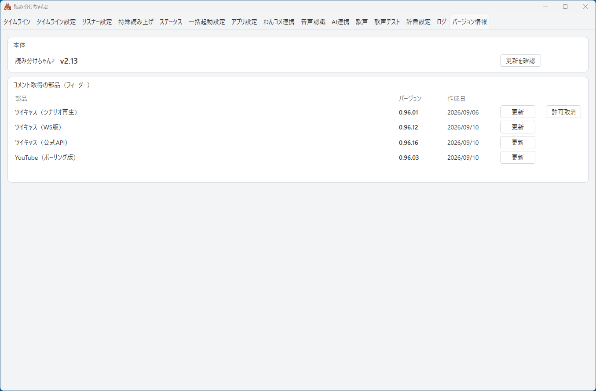

配信で使うまでの手引き
すでにツイキャスなどで配信をしている方向けのガイドです。
このページでは、インストールから最初の配信で使うまでを順に案内します。 途中でつまずいたら、遠慮なく X @yomiwakechan まで。 「分かりにくかった」という報告そのものが宝です。
- 1. インストール
- 2. 最初にやること（ツイキャス配信者向け）
- 3. ツイキャスのアクセストークンとは
- 4. 配信前に常連さんを登録する（事前登録）
- 5. OBS 連携（マイク検出）の設定
- 6. わんコメ連携（v2.13 で追加）
- 7. AI連携（v2.13 で追加・ローカル LLM 推奨）
- 8. 音声認識（v2.13 で追加）
- 9. 本体とコメント取得プログラムの更新
- 10. irodori-tts 系の声を使うには
- 11. まだ発展途上の項目
- 12. 困ったら・気づいたら
1. インストール
- VOICEVOX を入れておく（お勧め・無料）
多彩な声とお歌機能をフルに使うには、無料の音声合成ソフト VOICEVOX をお勧めします。 後から入れても構いません（何も入れなくても Windows 標準音声で最低限動きます）。
※ COEIROINK・AivisSpeech・棒読みちゃん（いずれも無料）にも対応しています。 VOICEROID2 / CeVIO AI / VOICEPEAK をお持ちの方はそれも使えます （VOICEPEAK は 1 回しゃべるたびに数秒の待ちが避けられないため、 配信のために新しく購入することはお勧めしません）。 感情や演技指示のできる irodori-tts 系の声は 10 章へ（GPU 推奨）。 - インストーラをダウンロード
最新版のダウンロードはこちら （yomiwakechan2-setup-v2.15.exe）。 - インストーラを実行
「Windows によって PC が保護されました」の青い画面が出たら、 「詳細情報」→「実行」で進めてください （この警告について詳しく）。 管理者権限は不要で、完了するとデスクトップに「読み分けちゃん2」アイコンができます。
%LOCALAPPDATA%\yomiwakechan2\ などに保存され、
上書きインストールやアンインストールでは消えません。
v2.10 からの更新は、アプリ設定・リスナー（コメント者）ごとのプロファイル・読み上げ辞書・歌フレーズ・実績が
そのまま引き継がれます（初期設定ウィザードは出ません）。v2.10 からの今回の更新は、このページのインストーラを実行してください（アプリ内の [更新を確認] は v2.11 以降にある機能です）。 v2.13 以降からは、アプリの「バージョン情報」タブの [更新を確認] でも更新できます（9 章）。
v2.1 以降は、アプリ側の設定（接続先・表示・動作などの設定）を v2.00 から引き継がず、 初回起動時の初期設定ウィザードで設定し直す方式です。 それまでの設定は自動でバックアップに退避されます（消えるわけではありません）。 リスナーごとの設定は上のとおり引き継がれます。
旧版への入れ戻しはしないでください。 新しい版で保存した設定ファイルを旧版に読ませると、設定やリスナーごとの通算が壊れることがあります。
2. 最初にやること（ツイキャス配信者向け）
- 読み分けちゃん2 を起動する（初回は設定ウィザードが開きます）
初回起動時には初期設定ウィザードが開きます。画面の案内に沿って、 使う配信プラットフォーム・配信 ID・アクセストークン・読み上げスタイルを設定してください。 ここで設定した内容は、あとから設定タブでいつでも変更できます。
ウィザードを終えると「タイムライン」タブが開き、音声エンジンのスキャンが自動で走ります。 スキャンの進捗の小窓が閉じて [受信開始] が押せるようになれば準備完了です （「ステータス」タブの稼働状態は「準備完了（受信を開始していません）」）。この時点で声の設定などを始められます （まだコメントの取得は始まっていません）。 - ツイキャスは「API 版」がおすすめ
ウィザードでツイキャスを選ぶと、API 版と WS 版のどちらを使うか聞かれます。
【おすすめ】API 版：メンバー限定配信に対応し、テロップの更新やコメント投稿ができます （X〔旧 Twitter〕連携はできません）。利用にはアクセストークンの設定が必要で、 取得の手順はウィザードが案内します（アクセストークンとは何か）。
WS 版：アクセストークンなしで手軽にコメントを受信できます （メンバー限定配信・テロップ更新・コメント投稿には対応しません）。
※ YouTube で使う場合は、動画 URL・動画 ID・@ハンドル・チャンネル URL のいずれかを 入力します。 - 配信 ID とエンジンを確認する（あとから変えるときはここ）
配信者 ID の入力欄は「タイムライン設定」タブにあります （表 ID・c: 付き ID・配信ページの URL、どれを貼っても OK です）。
使う音声エンジン（VOICEVOX など）にチェックが入っているかは 「一括起動設定」タブで確認できます。 起動✓を入れると使用エンジンにも自動で入ります。
「タイムライン設定」タブ。右側の欄に配信者 ID を入れます （ツイキャスの右のドロップダウンで公式 API 版／WS 版を切り替えます） 
「一括起動設定」タブ。使うエンジンにチェックを入れておくと、一括起動でまとめて立ち上がります。 最上段の「起動時に一括起動する」（既定オフ）と、連携アプリの段の わんコメ・OBS Studio は v2.13 で加わりました - タイムラインタブの [受信開始]（一括起動する方は [一括起動して受信開始]）を押す
上部の帯に [一括起動して受信開始]・[受信開始]・[再スキャン] の 3 つのボタンがあります。
[一括起動して受信開始]：一括起動設定でチェックした音声エンジン・連携アプリを起こし、スキャンし直してから コメントの取得を始めます（エンジンをまだ起動していない方はこちら）。
[受信開始]：いまスキャンされているエンジンのまま、コメントの取得を始めます （エンジンを自分で起動してある方・Windows 標準音声だけで試す方はこちら）。
3 段目の配信プラットフォーム情報のカードが「受信中」になれば成功です （「ステータス」タブの稼働状態は「受信待受中」）。
※ エンジンを後から起動したときは [再スキャン] で取り直せます（受信中でも押せます。 その場合は確認が出て、読み上げ待ちのコメントは破棄されます）。 毎回同じ構成で配信する方は、一括起動設定タブ最上段の「起動時に一括起動する」（既定オフ）に チェックを入れると、アプリの起動と同時にエンジンも起きます（受信は [受信開始] を押してから）。
※ コメント取得プログラムの初回起動時にも Windows の警告やファイアウォールの確認が出ることがあります。 許可して進めてください。
受信を始める前のタイムラインタブ。左上の[一括起動して受信開始] が本番のスイッチです （画像は v2.10 時点。v2.13 ではその右に [受信開始] と [再スキャン] が並びます） - テストコメントで動作確認
配信を開始し、自分のスマホなどからコメントを送ってみてください。 コメントが声になって聞こえたら OK です。 タイムラインにコメントが流れ始め、いま読んでいるコメントが分かるようになります。
※ 読み上げ・スキップ・有料累計などの統計は「ステータス」タブで見られます。
稼働中のタイムライン（v2.13）。中央の緑の枠（Reading）が「いま読んでいるところ」で、 その上が未読、下が読み終わったコメントです。3 段目の配信プラットフォーム情報のカードが「受信中」になっています 
「ステータス」タブ。読み上げ・スキップ・有料累計などの統計、エンジンごとの話者数、 直近のログがひと目で分かります
選択モードは自動では読み上げず、タイムラインから読みたいコメントを選んで読み上げます。 コメントの多い配信や、読むものを自分で選びたいときに。
※ どちらも、あとから「タイムライン」タブでいつでも切り替えられます。
- 「字幕」チェック（「結線」の右）：音声認識（8 章）を使っているとき、 認識した言葉をタイムラインの下端に字幕として出すかどうか。既定オン。
- 配信プラットフォーム情報を別ウィンドウへ：タイムラインタブ 3 段目の枠（コメント取得の状態が並ぶ場所）は、 左端の縦線をつまんで外へ引くと別ウィンドウになります（ダブルクリック・右クリック「別ウィンドウへ」でも可）。 別ウィンドウには「最前面」チェックと「タブへ戻す」があり、閉じてもタブへ戻ります。 タイムラインを広く使いたいときに。
- 一時停止中は、[再開] ボタンに残り秒数が出ます（一時停止は秒数を足す形です）。
- 配信プラットフォーム情報の並び（v2.15）：3 段目の情報欄はフィーダーごとに 1 行ずつ横いっぱいに並びます。 「タイムライン設定」タブの「フィーダー（コメント取得）」でチェックを入れたフィーダーだけが並ぶので、 使わないフィーダーは非表示にできます。
3. ツイキャスのアクセストークンとは
ツイキャスを API 版で使うときだけ必要になるものです （WS 版を選んだ方・YouTube の方は、この章は飛ばして構いません）。
ひとことで言うと
アクセストークンは、ツイキャスが発行する「このアプリに、私のアカウントの範囲で コメントの取得などをさせてよい」という許可証です。 パスワードではありません。読み分けちゃん2 にツイキャスのパスワードを入力することはありませんし、 入力を求めることもありません。
ツイキャスの公式 API は、この許可証を持っている相手にだけ答えます。だから API 版では トークンの設定が要るかわりに、メンバー限定配信のコメント取得・テロップの更新・コメント投稿 ができるようになります。
取り方（画面の案内どおりで終わります）
- トークンの設定画面を開く
初回起動の初期設定ウィザードでツイキャスの API 版を選ぶと、 [トークンの設定を開く] のボタンが出ます。 あとから設定するときは、タイムラインタブ 3 段目の「配信プラットフォーム情報」の枠にあるツイキャスの行の [設定を開く] から開けます（枠を別ウィンドウに出しているときは、その窓の中にあります）。 - [認可ページを開く] を押す
既定のブラウザでツイキャスの許可画面が開きます。内容を確認して許可してください。 - アプリに戻ってくるのを待つ
許可すると自動でトークンが設定されます。
※ 途中で「このアプリで開きますか？」という確認が出たら [開く] を押してください （「常に許可」にチェックを入れると次回から出ません）。確認画面やエラーらしい表示が出ても正常です。 - 接続チェックの結果を確認して閉じる
トークンが入ると、設定画面が自動で接続チェックを行い、完了の案内が出ます （手動で確かめたいときは [接続チェック]）。 確認できたら [アクセストークンの設定を完了して閉じる] で閉じます。![トークン設定（ツイキャス公式API）の画面。[認可ページを開く]・トークンの貼り付け欄・[接続チェック]](screenshots/webinstruct/v210screenshots/twicas_token.jpg)
トークン設定の画面。上の [認可ページを開く] から始め、 うまくいかないときだけ真ん中の貼り付け欄を使います （画像は v2.10 時点。v2.13 同梱の版では完了の案内と [アクセストークンの設定を完了して閉じる] が加わっています）
#access_token= のうしろから、最初の & の手前までを
コピーして、設定画面の「トークンを貼り付け」欄に貼り、[設定] を押してください。
自動で入らなくても、この道で必ず設定できます。
取り扱いについて
- トークンはお使いの PC の中（コメント取得プログラム側）に保存されます。 読み分けちゃん2 の本体は、トークンの値そのものを持ちません。
- 他人に見せない・配信画面に映さないでください。 許可証なので、他人の手に渡ればその範囲のことができてしまいます。 設定画面を開いたまま画面共有をしないようご注意ください。
4. 配信前に常連さんを登録する（事前登録）
読み分けちゃん2 の中心は「リスナーごとの読み分け」。 常連さんをあらかじめ登録しておくと、初回の配信からいきなり本領を発揮できます。 配信を始める前（準備完了の状態）でも登録できます。
- 「リスナー設定」タブを開く
コメント者一覧の上にある「事前登録…」ボタンを押します。
※ 名前の読み上げや未登録者の声などの設定は「特殊読み上げ」タブにあります。 リスナー設定タブの左上の [名前読み上げ設定]・[未登録者読み上げ設定] ボタンから、その項へ直接跳べます。
「リスナー設定」タブ。左がコメント者の一覧で、その上に [事前登録…] があります。 右がその人の設定面です（画像は v2.10 時点。v2.13 では左上に [名前読み上げ設定]・[未登録者読み上げ設定] が並び、 AI の許可✓が「AI(低)許可」「AI(高)許可」の 2 個になっています） - サイトと名前を入力して登録
サイト（twicasなど）を選び、常連さんの名前を入力して「登録」。
※ 名前はコメント時の表示名と一致させてください。一致していると、 その人の初回コメントから設定が効きます。同じサイト・同じ名前の登録が既にある場合は、 新規作成せずその編集画面が開きます。
サイトと名前だけで作成できる。細かい設定は次の編集画面で
※ この 1 枚だけ v2.00 時点の画面です（入力する項目は変わっていません） - 編集画面で敬称・読み替えなどを設定
登録するとそのまま編集画面が開きます。「〜さん／〜ちゃん」などの敬称、名前の読み替え、 優先度（1〜10）、声コマンド・歌コマンドの許可、AI の許可（低／高）は配信前でも設定できます （設定面は上の画像の右半分です）。
※ 優先度 10 は有料アイテムと同等＝混雑時も必ず読まれます。 - 声の割り当ては「準備完了」になってから
起動時のスキャンが終わって「準備完了」になれば、受信を始める前でも声を選べます。 試し読みで聞き比べながら、その人らしい声を選んでください。
※ 声を決めていないリスナーは「未割り当て（受信開始時に既定の声で補完されます）」と表示され、 [受信開始] のときに既定の声が入ります。エンジンを後から起動したときは、タイムラインタブの [再スキャン] で声の一覧が増えます。
シャウト（v2.14 で追加・v2.15 で条件を拡張）＝語句・ギフト・加入などに反応して定型文を読む
「特殊読み上げ」タブの一番下に「シャウト」の一覧があります。[追加] で 1 件作り、右の編集面で
シャウト名・反応条件（コメント本文の語句／無料アイテム／有料アイテム／メンバーシップ加入。アイテムはアイテム名を指定・空ならすべて）・
読み上げ内容・有効・クールダウン（秒）・声を決めます。条件に当たったコメントは今までどおり読んだ後に、
読み上げ内容をそのシャウトの声で読みます（名前の部分は「システムメッセージ」の呼称）。
読み上げ内容には $ユーザーネーム$・$アイテムネーム$・$金額$・$コメント$ が使えます
（金額が分からない場面では $金額$ を含む内容は読みません）。1 コメントにつき 1 件（加入 → 有料 → 無料 → 本文の順）。
声を使うので、編集はスキャン（準備完了）後にできます。
※ v2.15 で反応条件が増えました：初見（はじめての人）・枠初（この配信で最初のコメント）・枠で最初のアイテム・
初めての有料アイテム・高額アイテム（金額が指定額以上）・通算／枠内／個人のコメント数が○件ごと・個人のアイテム数／有料アイテム数が○個ごと・
久しぶり（前回から○日以上ぶり）・累計金額の節目（○円ごと）。数を使う条件では「○」の値を欄で決めます。読み上げ内容では
$回数$（その条件が見た数）や $通算コメント数$・$個人アイテム数$ などの置き換えワードも使えます
（$ユーザーネーム$ は敬称なしの素の読み方になったので、「さん」などは文の側に書きます）。各シャウトの
「わんコメにも転送」のチェック（既定オン）で、わんコメへ送るかを 1 件ごとに決められます。

5. OBS 連携（マイク検出）の設定
自分がマイクで話している間、読み上げが待ってくれる機能です。 自分の声と読み上げの「声かぶり」を防ぎます。OBS で配信している方にお勧めです。
※ この機能はオプションです（既定 OFF）。OBS を使っていない方は飛ばして構いません。
OBS 側の準備
- WebSocket サーバーを有効にする
OBS のメニュー「ツール」→「WebSocket サーバー設定」を開き、 「WebSocket サーバーを有効にする」にチェックを入れます。 - 接続情報を控える
同じ画面の「接続情報を表示」を押すと、ポート番号とパスワードが確認できます。 パスワードをコピーしておきます。
OBS 側の「WebSocket サーバー設定」。ポート番号（既定 4455）とパスワードをここで確認します - マイクにノイズゲートを入れる（推奨）
マイク音源の「フィルタ」にノイズゲートを追加しておくと、検出の精度が上がります。 読み分けちゃん2 はフィルタ通過後の音量で「話している」を判定するので、 感度の調整（しきい値）は OBS のノイズゲート側で行ってください。
読み分けちゃん2 側の設定
- 「アプリ設定」タブで OBS 発話検出を有効にする
機能を有効にし、ホスト・ポート・パスワード（さきほど控えたもの）を入力します。
読み分けちゃん2 側の設定。対象の入力名は OBS でのマイク音源の名前に合わせます - 遅延を好みに合わせる
リリース遅延＝話し終えてから読み上げが再開するまでの間（既定 2 秒）、 アタック遅延＝話し始めてから読み上げが止まるまでの間（既定 0 秒）。 まずは既定のままで大丈夫です。 - 稼働中はタイムラインタブでオン・オフ
「タイムライン」タブの上部にあるOBS 発話検出のトグルで、その場で切り替えられます。 つながっていれば、隣の状態欄に「接続済み（監視中）」と表示されます （マイクのレベルメーターも出るので、喋って振れれば検出が効いています）。 アプリ設定で有効にしていないときは「無効（アプリ設定で有効化）」と出ます。
- 読み上げの途中でぶつ切りにはなりません。いま読んでいる 1 件は最後まで読み切り、 次のコメントから待ちます。
- OBS を後から起動しても、自動でつながります。
- OBS の設定を読み分けちゃん2 が書き換えることはありません。
※ OBS 側で「起動時に自動的に配信を開始」を有効にしている場合、一括起動で配信が始まります。 アプリを終了しても OBS は閉じません。
おまけ：履歴ウィンドウを配信画面に載せる
読み上げ履歴は別ウィンドウで表示でき、罫線をオフにしたフラットな見た目にもできます。 OBS のウィンドウキャプチャで配信画面に載せれば、コメント表示としても使えます。
※ 既知の事象：OBS のウィンドウキャプチャは、アプリを再起動するとキャプチャが 外れることがあります。外れたら OBS 側でソースのウィンドウを選び直してください。
6. わんコメ連携（v2.13 で追加）
コメント表示ツール「わんコメ」をお使いの方向けの機能です。 読み上げの開始にあわせて、そのコメントをわんコメへ送ります。表示のデザインや演出（WordParty）は わんコメ側の設定がそのまま使われます。
- いまの資産を捨てなくていい：OBS のシーン・テンプレート・WordParty の演出はそのまま、 読み上げだけを読み分けちゃん2 に差し替えられます。
- 読み上げと表示が同期する：読み分けちゃん2 が読んでいるコメントが、そのときわんコメの画面に出ます （混雑して読み飛ばしたコメントも、既定では送られます）。
- ギフトはアイテムの画像・アイテム名・本文・（+🍡ポイント）の形で、メンバーシップの表示（会員バッジ）も わんコメ側に引き継がれます。
つなぎ方（5 步）
- わんコメ側で、送出先の枠を用意する
読み分けちゃん2 からのコメントを受ける枠を、わんコメの枠一覧に作っておきます。 - その枠の「書き出し」をオンにする
わんコメの枠一覧のトグルで、用意した枠の「書き出し」を ON にします。 - わんコメは配信枠に「接続」しない
わんコメ側でも配信枠に接続していると、投稿時と読み上げ時の 2 回表示されます。 コメントの取得は読み分けちゃん2 に任せてください。 - 読み分けちゃん2 の「わんコメ連携」タブで有効にし、枠を選ぶ
「わんコメ連携を有効にする（読み上げ開始時に送出）」にチェックを入れ、 接続先（既定のままで OK）を確認して [枠一覧を取得] → 送出先の枠を選びます。 「スキップしたコメント（ギフト含む）も送出する」は既定オンです。 - [テスト送信] で表示を確認する
テスト文言を入れて [テスト送信]。わんコメ側の枠に表示されれば完了です。
※ v2.14 から、送るメッセージの種類を選べます（同じタブのチェック・すべて既定オン）： AI の応答（AI連携タブで選んだ画像つき）・システムメッセージ・メンバーシップ通知・シャウト（読み分けちゃんのアイコンつき）・ 配信の受信開始／切断の通知（ツイキャス／YouTube の名前で）・配信者の発話（音声認識・名前欄は既定「配信者」）。 リスナーのコメントの送り方は変わりません。


わんコメ側では配信枠に「接続」せず、送出先枠の「書き出し」のみ ON にしてください （接続すると投稿時と読み上げ時の 2 回表示されます）。枠の用意・「書き出し」ON は わんコメ側で手動で行ってください。
配信でわんコメを利用する場合はわんコメの利用規約に従ってください （無料利用ではクレジット表示が必要です）。
※ わんコメを一括起動に含めることもできます（「一括起動設定」タブの連携アプリの段・既定オフ。 起動✓を入れるとわんコメ連携も有効になります）。わんコメは別の作者の製品です。 連携の不具合は読み分けちゃん2 側（X @yomiwakechan）へお知らせください。
7. AI連携（v2.13 で追加・ローカル LLM 推奨）
コメントや配信者の声に AI が答えて、その答えを読み上げる機能です。 AI は何体でも作れて同時に動きます。AI ごとに接続先・モデル・キャラ設定・声と敬称・名前・アイコンを持てるので、 「性格の違う AI が 2 体いる配信」のようなこともできます。
呼び方＝「発火ワード」と「呼びかけワード」
- コメントから：AI の呼び名（発火ワード）で始まるコメントに AI が答えます
（例「めうちゃん！今日なに食べた？」）。
[AI]のような記法はありません。 発火ワードは AI ごとに複数書けます（1 行に 1 つ）。 - マイクから：配信者が声で呼ぶ言葉（呼びかけワード）は発火ワードとは別の欄です （書き言葉と話し言葉で呼び名を変えられます）。声で呼ぶには音声認識（8 章）が必要です。
- 1 つのコメント・1 回の呼びかけは、いちばん長く一致した 1 体だけに届きます。会話の窓は AI ごとなので、 別々の会話が混ざりません。
- リスナーごとの許可：リスナー設定の「AI(低)許可」「AI(高)許可」で、その人が呼べる AI のレベルを決めます （常連さんだけに高レベルの AI を開ける、など）。許可のないリスナーの呼びかけは、ふつうのコメントとして読み上げられます。
LM Studio でつなぐ（5 步）
- LM Studio を入れる
LM Studio をインストールします。 - モデルをダウンロードする
おすすめは openai/gpt-oss-20b（約 12GB）。120B クラスは Windows で不安定になりやすいためお勧めしません。 - サーバーをオンにする
LM Studio の Developer（サーバー）画面でサーバーを ON にします。既定の127.0.0.1:1234は 読み分けちゃん2 のローカル接続先の既定と同じなので、設定の変更は不要です。 - 読み分けちゃん2 の「AI連携」タブで接続先「ローカル」を選ぶ
「この機能について」を読んで「同意して使用する」にチェックを入れると、下の AI の一覧と設定が使えるようになります。 AI を追加（または移行された 1 体を選択）し、接続先をローカルにします。 - [モデル一覧を取得] → モデルを選ぶ → [接続テスト]
接続テストが成功すると、接続先が返すコンテキスト長（LM Studio では読み込み中のモデルの実際の窓）が自動で設定に入ります。 あとは発火ワード・キャラ設定・声を決めれば、コメントで呼びかけて試せます。

http://127.0.0.1:1234/v1）にして
[モデル一覧を取得] → モデルを選ぶ → [接続テスト]。成功するとコンテキスト長が自動で入ります（画像では 69376）。
発火ワード・キャラ設定・声は「基本と人格設定」「声の設定」のタブで決めます参考（作者の環境・Ryzen AI MAX+ 395／Radeon 8060S／RAM 64GB・gpt-oss-20b）：接続テスト 1.4 秒、 質問から回答まで 1.9 秒（39 字）。会話が満杯になっても 1.4〜2.8 秒で頭打ちでした。クラウドの既定モデルは思考時間込みで 10 秒前後かかることがあります。
クラウドの AI サービスに接続するときの注意（アプリ内の「この機能について」と同じ内容）
AI連携を有効にすると、AI への呼びかけ（発火ワードで始まるコメント）の本文・配信者の呼びかけ・直近の会話が、 選んだ接続先（外部の AI サービス）へ送信されます。送信した内容が学習に使われるかどうかは接続先の規約によります （無料枠では学習に使われることがあります）。配信で扱う内容にご注意ください。
⚠ API キーを設定すると、接続先によっては利用量に応じた料金が発生します。 無料枠の条件や料金の仕組みを理解してからキーを設定してください （利用量の管理と支払いは、キーを発行した配信者自身の契約です。アプリ側に上限装置はありません）。 「無料枠」のある接続先でも、アカウントに支払い方法（クレジットカード等）を設定していると 課金が発生することがあります＝課金設定のないアカウント以外は「無料」とは言い切れません。 また、API キーが第三者に知られると、あなたの契約で勝手に AI を使われる恐れがあります。 キーを人に教えたり、設定画面やファイルを配信に映したりしないでください。
AI連携は、次の同意のもとで提供されます：AI連携の利用により生じたいかなる結果 （API の利用料金、API キーの漏えい、AI の発言内容、外部サービスの規約変更・障害などを含みます） についても、読み分けちゃんの制作者は一切の責任を負いません。
料金の仕組み（理解したい方向け）
- 毎回の送信に何が載るか：キャラ設定などのシステムプロンプト＋直近の会話（既定で最大 10 往復）＋ 文脈として含める設定にしたコメントや発話＋今回の質問。AI サービスのサーバーは会話を覚えていないので、 アプリが毎回過去の会話を送り直すことで連続性が生まれます。「1 回の質問」でもこの全部が入力として数えられるのが出発点です。
- 重くなる設定の順：①「通常のコメントも文脈に含める」（毎回最大 50 件を再送・いちばん効く） ②「配信者の発話も文脈に含める」③会話の往復数を増やす ④キャラ設定を長く書く。 会話が続くほど・ダイヤルを開くほど、1 問あたりの入力は増えます。
- 割引の仕組み：多くの接続先は「前回と同じ書き出し部分」を自動で割り引きます。アプリは送信の先頭が動きにくい形で送っているため 割引が乗りやすく、表示上のトークン数がそのまま満額の請求とは限りません（正確な請求は接続先の管理画面が正です）。
- 80% クリア：送る量が接続先のコンテキスト長の 8 割に達すると、その AI の会話をまるごと空にして 「（AI名）のコンテキストWindowがいっぱいになったので会話をクリアします」と読み上げます。 放っておくと入力が上限まで膨らみ続けるのを止める装置で、損ではありません。
- アプリ内の数字：AI連携タブの「今回の配信／前回の配信／累計」と「直近の送信 n トークン（残り %）」は 接続先が申告した利用量の合計で、目安です。金額への換算は接続先・モデルごとに違うため、アプリでは行いません。
※ AI連携タブの「送信内容をログに残す（テスト用・API キーは伏せます）」は既定オフです。
オンにすると AI へ送った会話の本文が手元のファイルに残ります。ログを人に渡すときはご注意ください。
※ 接続先の既定 URL・既定モデルは AI連携タブの [プロバイダ一覧を更新] で、アプリを入れ替えずに最新にできます。
※ v2.10 で AI の設定（[AI] 時代の接続先・鍵）を入れていた方は、初回起動で自動的に AI 1 体へ引き継がれます。
[AI] は使えなくなり、発火ワードで呼びかける形に変わりました。
8. 音声認識（v2.13 で追加）
配信者のマイクの声を、お使いの PC の中だけで文字にする機能です。外部には送りません・API キーも不要・CPU で動きます。 文字にした言葉は読み上げには使いません。使い道は 2 つ——AI への呼びかけと、タイムラインの字幕です。
- 「音声認識」タブで 「音声認識を使用する（配信者のマイクをローカルで文字起こしします）」にチェック
既定はオフです。 - 初回だけモデルをダウンロードする
[モデルをダウンロード（約121MB・初回のみ）] を押します。取得したモデルは PC 内に保存され、次回からは不要です （フォルダを手で指定することもできます）。 - マイクを選ぶ
「マイク：」で使うマイクを選びます（一覧の先頭「（既定のデバイス）」のままなら Windows の既定の録音デバイス）。 - 話してみる
同じタブの「状態と認識結果」に、話している途中の文字と確定した文字が出ます。 「認識したテキストをタイムラインに表示する」とタイムラインタブの「字幕」チェックがオンなら、 タイムラインの下端にも字幕として出ます（途中は薄い色、確定で通常の色、確定から数秒で消えます）。

※ 音声認識には sherpa-onnx（Apache License 2.0）・ReazonSpeech k2 v2（Apache License 2.0）・ Silero VAD（MIT License）を使用しています。各ライセンスの全文はダウンロードされるモデル一式に同梱されます。
9. 本体とコメント取得プログラムの更新
v2.13 からは、新しい版が出たときにアプリの中から更新できます。どちらも手動で、自動では確認しません。
- 本体：「バージョン情報」タブの [更新を確認]
新しい版があれば内容を示し、もう一度押すとインストーラを取得（改ざんがないことを検分）して起動します。 インストーラの完了画面のチェックを入れたままにすると、本体が再起動します。
※ 受信中に押すと「再起動が必要」と明示されます。そのまま続けると受信を止めて更新します。 失敗したときは一行の状態文で知らせます。うまくいかないときは、取得したインストーラ （%LOCALAPPDATA%\yomiwakechan2\updates\）を手で実行するか、このページから落として上書きインストールしてください。 - コメント取得プログラム：同じタブの [更新]
「コメント取得の部品（フィーダー）」の一覧の各行にある [更新] を押すと、配布されている版と照合して、 違えば差し替えます。起動中の個体は止めて差し替え、差し替えられなければ次回起動時に適用します（再起動を案内します）。

- 更新後も設定・リスナーの台帳はそのまま引き継がれます。
- 旧版への入れ戻しはしないでください。新しい版が書いた設定を旧版は知らないため、壊れることがあります。
- 配布経路以外で入れたコメント取得プログラム（開発ビルドや手コピー）は、最初に使うとき一度だけ 「承認済み配布元から導入されたものではありません」と確認します。ふつうにインストールした方には出ません。
10. irodori-tts 系の声を使うには
irodori-tts は、感情や演技指示（自由文のプロンプト）で声色を作れる音声合成です。 読み分けちゃん2 では 2 つの経路に対応しています。どちらも別途インストールが必要で、GPU を推奨します。
GPU（GeForce RTX シリーズ／Radeon）推奨。CPU でも動作し実配信でも使えますが、実用的ではありません （短い文が 1〜2 秒で読まれれば GPU で動いています。十数秒かかるなら CPU で動いています）。 複数の GPU のどれを使うかは irodori-tts 側の設定で決まり、読み分けちゃん2 からは変更できません。
経路 A：irodori-TTS-for-yomiwakechan（配布版・お勧め）
Python の環境構築なしで、irodori-tts を配信の声にできます。
- 配布ページからインストーラを入手する
https://mugonkun.github.io/irodori-tts-for-yomiwakechan/
GPU に合わせて CUDA 版（GeForce RTX など NVIDIA）か Radeon 版（AMD）を選びます。 導入手順と動作環境の詳細は配布ページをご覧ください。 - インストールする
画面の案内に従って進めます。初回はモデルのダウンロードに時間がかかります。 - 読み分けちゃん2 で使う
読み分けちゃん2 を起動（または [再スキャン]）すると、インストール先を自動で見つけて 「一括起動設定」タブに「irodori-TTS-for-yomiwakechan」の席が埋まります。チェックを入れれば一括起動で一緒に起動します （初回起動のウィザードでも、見つかっていれば候補に並びます）。
- 配布版は上流の Irodori-TTS の作者とは無関係の非公式・別プロダクトです。問い合わせは配布ページへ。 出力には非可聴の透かしが乗ります。CPU ではとても遅くなります。
経路 B：Irodori-TTS-Server（コマンドライン導入）
Irodori-TTS-Server をお使いの方は、そのまま 9 番目のエンジン「Irodori-TTS」として使えます。読み分けちゃん2 の一括起動設定で、実行ファイルまたは Server のフォルダ・起動オプション・作業フォルダを 指定します（精度は既定 bf16）。
※ Server の導入はコマンドラインで行い、ダウンロードは合計 5〜6GB＋初回のモデル約 2.9GB、 所要 15〜30 分ほどです。GPU 用の起動スクリプト（bat）から起動するのがお勧めです。 導入手順の詳しい案内はこのページには載せていません——環境構築を避けたい方は経路 A をお使いください。
声の作り方（両経路共通）
- リスナー設定・特殊読み上げの声の編集面で、話者を選ぶ代わりに演技指示（自由文）とパラメータで声色を決めます。 参照音声（wav）をプロファイルに指定することもできます。
- シードは空なら毎回少し揺らぎ、数値を入れると固定されます。配布版の編集面では「シード値を生成して試し読み」で 好みの声が出るまで試せます。各スライダーの説明はツールチップにあります（分からない項目は初期値のままで大丈夫です）。
11. まだ発展途上の項目
正直にお伝えしておきます。以下は把握済みで、順に育てているところです。 「ここで困った」の報告は大歓迎です。
- YouTube のコメント取得は生まれたてです。ツイキャスに比べてテストの蓄積が浅いため、 取得まわりで不自然な挙動があればぜひ教えてください。
- 長い歌はコメントの文字数上限で途切れます。いまは譜面を分けて送る必要があります。 複数コメントをつなげて歌う仕組みは設計中です。
- メンバーシップは把握・表示まで。未登録のリスナーの優先度への自動反映は、まだ検討中です （登録済みのリスナーは優先度で守れます）。
- CeVIO は AI 版に対応。CeVIO CS への対応は今後の課題です。
- irodori-tts 系は GPU が前提です。CPU では動きますが、配信で実用的な速さは出ません。
- AI連携・音声認識は v2.13 で加わったばかりです。接続先ごとの癖や、マイク環境による認識のばらつきは 実際の配信で育てているところです。
- まれに、終了時にウィンドウが残ることがあります。再現条件を調査中です。 残ってしまったらタスクマネージャーから終了してください。
12. 困ったら・気づいたら
動かない・分かりにくい・こうだったら嬉しい——どんなことでも、 X @yomiwakechan へお寄せください。 配信で直接伝えてもらうのも大歓迎です。
報告の際、差し支えなければ以下があると助かります：
- 何をしたら・何が起きたか（起きた時刻もあると助かります）
- お使いのバージョン（「バージョン情報」タブで確認できます）
- お使いの音声エンジン（VOICEVOX / COEIROINK / AivisSpeech / 棒読みちゃん / irodori-tts 系 / VOICEROID2 / CeVIO AI / VOICEPEAK / Windows 標準）
- 画面の表示やログのスクリーンショット（AI の送信内容ログや API キーは映さないでください）